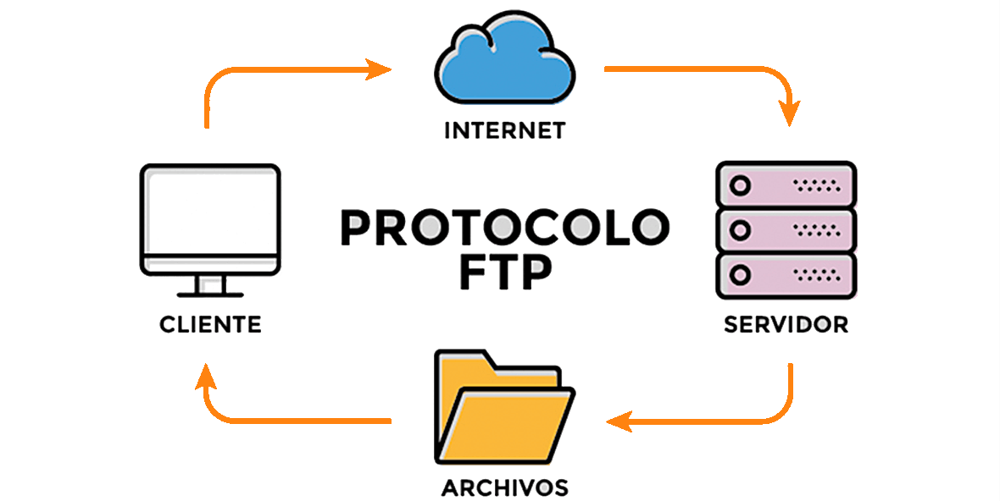
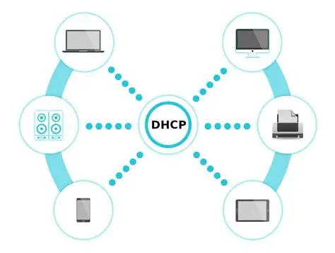
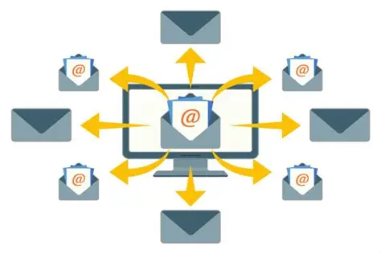

Servidores de Internet
1. Servidor DNS

¿Qué es y para qué sirve?
Un servidor DNS (Sistema de Nombres de Dominio) es como una guía telefónica de Internet. Su función principal es traducir los nombres de dominio que son fáciles de recordar para los humanos (como www.google.com) en direcciones IP numéricas que las computadoras pueden entender.
Ejemplo: Cuando escribes "www.google.com" en tu navegador, el servidor DNS traduce este nombre a la dirección IP 142.250.191.14, permitiendo que tu computadora se conecte al servidor de Google.
Sin los servidores DNS, tendríamos que memorizar direcciones IP numéricas para visitar cada sitio web, lo cual sería muy complicado.
2. Servidor WEB

¿Qué es y qué función cumple?
Un servidor web es una computadora que almacena, procesa y entrega páginas web a los usuarios. Utiliza el protocolo HTTP o HTTPS para comunicarse con los navegadores web y enviar el contenido solicitado.
Ejemplos de páginas que visitas diariamente:
- Facebook - Redes sociales
- YouTube - Videos en línea
- Amazon - Compras en línea
- Wikipedia - Enciclopedia en línea
- Gmail - Correo electrónico
Cada vez que haces clic en un enlace o escribes una URL, estás solicitando información a un servidor web.
3. Servidor FTP

¿Para qué se usa?
FTP (Protocolo de Transferencia de Archivos) es un servidor especializado en la transferencia de archivos entre computadoras a través de Internet. Permite subir y descargar archivos de manera eficiente y segura.
Ejemplos de uso:
- Subir archivos de un sitio web al servidor de hosting
- Descargar software desde servidores de empresas
- Compartir archivos grandes entre oficinas de una empresa
- Hacer respaldos de archivos importantes en servidores remotos
Los servidores FTP son especialmente útiles para desarrolladores web y empresas que necesitan transferir archivos de gran tamaño regularmente.
4. Servidor DHCP

¿Qué hace con las direcciones IP?
El servidor DHCP (Protocolo de Configuración Dinámica de Host) asigna automáticamente direcciones IP y otros parámetros de red a los dispositivos que se conectan a una red. Esto elimina la necesidad de configurar manualmente cada dispositivo.
Ejemplo: Cuando conectas tu teléfono, laptop o tablet al WiFi de tu casa, el router (que actúa como servidor DHCP) automáticamente le asigna una dirección IP única a cada dispositivo, como:
- Teléfono: 192.168.1.100
- Laptop: 192.168.1.101
- Tablet: 192.168.1.102
Sin DHCP, tendrías que configurar manualmente la dirección IP de cada dispositivo, lo cual sería muy tedioso y propenso a errores.
5. Servidor de Correos

Diferencia entre enviar (SMTP) y recibir (IMAP/POP3)
Los servidores de correo manejan el envío y recepción de emails. Utilizan diferentes protocolos según la función:
SMTP (Envío)
Simple Mail Transfer Protocol - Se encarga de enviar correos electrónicos desde tu cliente de email hacia el servidor de correo del destinatario.
IMAP y POP3 (Recepción)
IMAP (Internet Message Access Protocol): Mantiene los correos en el servidor, permitiendo acceso desde múltiples dispositivos con sincronización.
POP3 (Post Office Protocol 3): Descarga los correos al dispositivo y generalmente los elimina del servidor.
Ejemplo práctico:
- Cuando envías un email desde Gmail, usa SMTP para enviarlo
- Cuando recibes emails en tu teléfono y computadora simultáneamente, se usa IMAP
- Si descargas todos tus emails a una sola computadora, se usa POP3